subtype_distances
githubz0r
2019-03-26
Last updated: 2019-05-14
Checks: 6 0
Knit directory: SecretUtils/
This reproducible R Markdown analysis was created with workflowr (version 1.3.0). The Checks tab describes the reproducibility checks that were applied when the results were created. The Past versions tab lists the development history.
Great! Since the R Markdown file has been committed to the Git repository, you know the exact version of the code that produced these results.
Great job! The global environment was empty. Objects defined in the global environment can affect the analysis in your R Markdown file in unknown ways. For reproduciblity it’s best to always run the code in an empty environment.
The command set.seed(20190415) was run prior to running the code in the R Markdown file. Setting a seed ensures that any results that rely on randomness, e.g. subsampling or permutations, are reproducible.
Great job! Recording the operating system, R version, and package versions is critical for reproducibility.
Nice! There were no cached chunks for this analysis, so you can be confident that you successfully produced the results during this run.
Great! You are using Git for version control. Tracking code development and connecting the code version to the results is critical for reproducibility. The version displayed above was the version of the Git repository at the time these results were generated.
Note that you need to be careful to ensure that all relevant files for the analysis have been committed to Git prior to generating the results (you can use wflow_publish or wflow_git_commit). workflowr only checks the R Markdown file, but you know if there are other scripts or data files that it depends on. Below is the status of the Git repository when the results were generated:
Ignored files:
Ignored: .Rhistory
Ignored: .Rproj.user/
Untracked files:
Untracked: .Rbuildignore
Untracked: DESCRIPTION
Untracked: NAMESPACE
Untracked: R/hello.R
Untracked: analysis/all.panels.pdf
Untracked: analysis/cell_type_total_tSNE.w.pdf
Untracked: analysis/fraction.all.pdf
Untracked: analysis/subtype_distances.Rmd
Untracked: analysis/subtype_distances2.Rmd
Untracked: analysis/subtype_distances4.Rmd
Untracked: analysis/subtype_distances_redux.Rmd
Untracked: analysis/subtype_distances_revenge.Rmd
Untracked: analysis/test_output.Rmd
Untracked: analysis/transmute_peters_code.Rmd
Untracked: man/
Unstaged changes:
Modified: analysis/transmute_code_eps.Rmd
Modified: analysis/transmute_code_eps_2.Rmd
Note that any generated files, e.g. HTML, png, CSS, etc., are not included in this status report because it is ok for generated content to have uncommitted changes.
These are the previous versions of the R Markdown and HTML files. If you’ve configured a remote Git repository (see ?wflow_git_remote), click on the hyperlinks in the table below to view them.
| File | Version | Author | Date | Message |
|---|---|---|---|---|
| Rmd | 8155c17 | githubz0r | 2019-05-14 | some new plots |
| html | 8b7729d | githubz0r | 2019-04-15 | Build site. |
| Rmd | d65e02e | githubz0r | 2019-04-15 | new package |
Introduction
First we load packages and data (has been preproced with pagoda2 and graph builth with conos)
library(conos)Loading required package: MatrixLoading required package: igraph
Attaching package: 'igraph'The following objects are masked from 'package:stats':
decompose, spectrumThe following object is masked from 'package:base':
unionlibrary(pheatmap)
#library(fuck)
source('/home/larsc/SecretUtils/R/asdf.R')
require(pagoda2)Loading required package: pagoda2library(dplyr)
Attaching package: 'dplyr'The following objects are masked from 'package:igraph':
as_data_frame, groups, unionThe following objects are masked from 'package:stats':
filter, lagThe following objects are masked from 'package:base':
intersect, setdiff, setequal, unionlibrary(stringr)
library(tidyr)
Attaching package: 'tidyr'The following object is masked from 'package:igraph':
crossingThe following object is masked from 'package:Matrix':
expandlibrary(ggplot2)
library(cowplot)
Attaching package: 'cowplot'The following object is masked from 'package:ggplot2':
ggsavecon_object <- readRDS(file.path('/home/larsc/data/10x_preproced_graphed.rds'))
annot <- readRDS(file.path('/home/demharters/R/projects/UPF9_14_17_19_22_23_24_32_33/metadata_10x_final.rds'))rowbind the adjusted expression values
rbound_panel <- RbindPanel(con_object)Are the cell names in the same order?
identical(rownames(rbound_panel), rownames(annot)) # thank god, maybe add a sort for the future in Panelize[1] TRUEplot joint graph
con_object$plotGraph(color.by='sample',mark.groups=F,alpha=0.1,show.legend=T)Estimating embeddings.
| Version | Author | Date |
|---|---|---|
| 8b7729d | githubz0r | 2019-04-15 |
set cell annotation factor thingy
annot <- annot %>% mutate(cellids = rownames(annot)) # turn rownames into a col for convenience
annot <- annot %>% mutate(subtype_condition = paste(annot$subtype, annot$condition, sep='_'))
cellannot=setNames(annot[,5], annot[,4])Let’s see the graph now
con_object$plotGraph(groups=cellannot, font.size=3, shuffle.colors=T, show.legend=F)
| Version | Author | Date |
|---|---|---|
| 8b7729d | githubz0r | 2019-04-15 |
Damn, it looks awful.
Check which samples have which subtypes
# just for interest check how many subtypes for each sample
howmanysubs <- function(x, annotation){
annotsubset <- annotation[annotation$sample==x,]
return(unique(annotsubset$subtype)) #%>% length)
}
subs_of_samples <- unlist(CreateSampleGroups(annot, 3, 1)) %>% sapply(howmanysubs, annot)
# healthy 2 and 4 missing one
samp_intersect <- subs_of_samples %>% Reduce(intersect,.)
missing_subs <- setdiff(subs_of_samples$epilepsy1, samp_intersect)
missing_subs[1] "L5_Htr2c" "Pvalb_Nos1"Inter sample distance, aggregated
od_genes = conos:::getOdGenesUniformly(con_object$samples, 5000)
# split annot in categories (disease, healthy)
state_split <- split(annot, annot$condition, drop=TRUE)
# get probability distributions for subtype/sample categories
all_probs <- ObtainProbabilities(state_split, rbound_panel, 1, 2, 4, od_genes, pseudo.count=10^(-6))
# now get JS distances
all_distances <- Map(CalculateAllJSD, all_probs$healthy, all_probs$epilepsy)
#all_dists_dfd <- all_distances %>% lapply(function(x){data.frame(comparison=names(x), value=x, row.names=NULL)})
# use stackexchange magic to pad NAs to shorter distance vectors, and also tibbling
all_dists <- lapply(all_distances, `length<-`, max(lengths(all_distances))) %>% as_tibble
all_dists <- all_dists %>% mutate(comparison=names(all_distances$Id2_Reln))
# gather into format for easy ggplot
all_dists_gathered <- gather(all_dists, key=subtype, value=js_distance, -comparison)
# plot
ggplot(all_dists_gathered, aes(y=js_distance, x=subtype)) + geom_violin()+geom_point(aes(col=comparison), alpha = 0.6, size=1.8) +
theme(axis.text.x = element_text(angle = -90, hjust = 1))Warning: Removed 6 rows containing non-finite values (stat_ydensity).Warning: Removed 6 rows containing missing values (geom_point).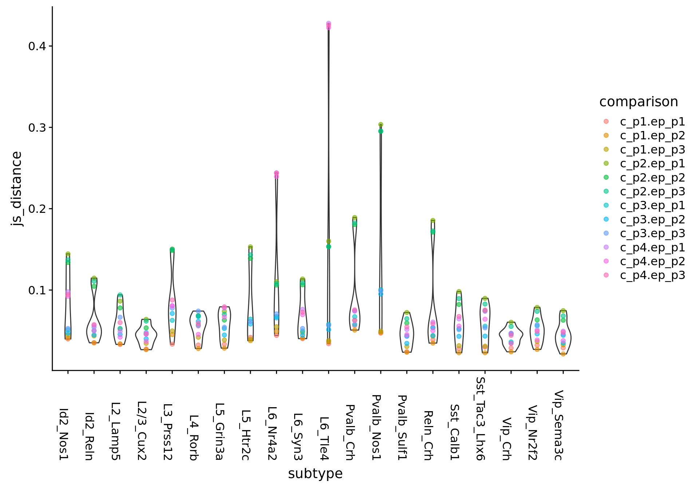
| Version | Author | Date |
|---|---|---|
| 8b7729d | githubz0r | 2019-04-15 |
disannot<-setNames(annot[,3], annot[,4])
subannot<-setNames(annot[,2], annot[,4])
con_object$plotGraph(groups=subannot, alpha=0.1, font.size=3)
| Version | Author | Date |
|---|---|---|
| 8b7729d | githubz0r | 2019-04-15 |
con_object$plotGraph(groups=disannot, alpha=0.1)
| Version | Author | Date |
|---|---|---|
| 8b7729d | githubz0r | 2019-04-15 |
let’s see overall JS dist.
od_genes = conos:::getOdGenesUniformly(con_object$samples, 1000)
state_split <- split(annot, annot$condition, drop=TRUE)
subtype_split <- state_split %>% lapply(function(x){split(x, x$subtype, drop=TRUE)})
healthy_probs <- subtype_split$healthy %>% GetSampProbs(rbound_panel, od_genes, cellid.col = 4, pseudo.count=10^(-10))
epilepsy_probs <- subtype_split$epilepsy %>% GetSampProbs(rbound_panel, od_genes, cellid.col = 4, pseudo.count=10^(-10))
all_dists <- Map(JensenShannon, healthy_probs, epilepsy_probs) %>% as_tibble
all_dists_gathered <- gather(all_dists, key=subtype, value=js_distance)
ggplot(all_dists_gathered, aes(y=js_distance, x=subtype)) +geom_bar(stat='identity', col='hotpink') +
theme(axis.text.x = element_text(angle = -90, hjust = 1))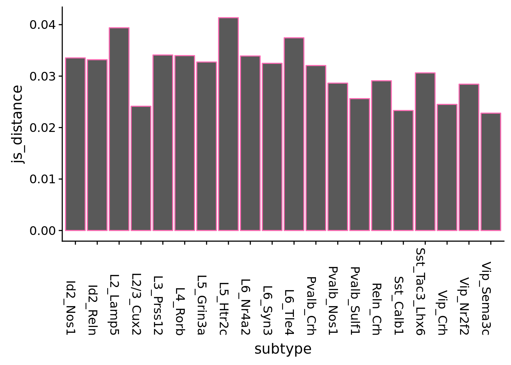
| Version | Author | Date |
|---|---|---|
| 8b7729d | githubz0r | 2019-04-15 |
Dependency on nr of cells or genes?
od_genes = conos:::getOdGenesUniformly(con_object$samples, 2000)
state_split <- split(annot, annot$condition, drop=TRUE)
condition_tables <- state_split %>% lapply(function(x){table(x$subtype)})
condition_df <- condition_tables %>% as.data.frame
condition_df <- condition_df %>% mutate(min_cells = mapply(min, epilepsy.Freq, healthy.Freq))
subtype_split <- state_split %>% lapply(function(x){split(x, x$subtype, drop=TRUE)})
healthy_probs <- subtype_split$healthy %>% GetSampProbs(rbound_panel, od_genes, cellid.col = 4, pseudo.count=10^(-10))
epilepsy_probs <- subtype_split$epilepsy %>% GetSampProbs(rbound_panel, od_genes, cellid.col = 4, pseudo.count=10^(-10))
all_dists <- Map(JensenShannon, healthy_probs, epilepsy_probs) %>% as_tibble
all_dists_gathered <- gather(all_dists, key=subtype, value=js_distance) %>% mutate(min_cells = condition_df$min_cells)
ggplot(all_dists_gathered, aes(y=js_distance, x=min_cells, col=subtype)) +geom_point() +
theme(axis.text.x = element_text(angle = -90, hjust = 1))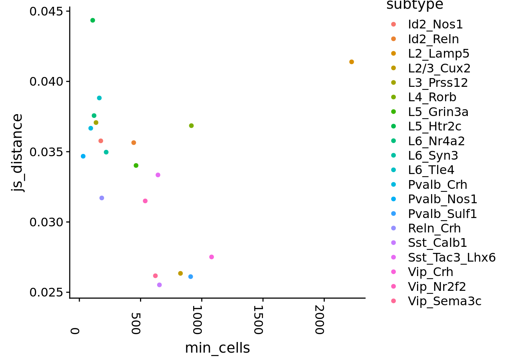
od_genes = conos:::getOdGenesUniformly(con_object$samples, 2000)
nr_cells <- c(30, 60, seq(100, 1000, by=50))
nr_cells2 <- (seq(30,300,by=15))
do_js_cells <- function(nr.cell, subtype, pseudo.prob=1e-8) {
healthy_probs <- subtype_split$healthy[[subtype]] %>%
SelectCellProbsAggregated(od_genes, rbound_panel, cellid.col = 4, nr.cell=nr.cell, pseudo.count=pseudo.prob)
epilepsy_probs <- subtype_split$epilepsy[[subtype]] %>%
SelectCellProbsAggregated(od_genes, rbound_panel, cellid.col = 4, nr.cell=nr.cell, pseudo.count=pseudo.prob)
js.dist <- JensenShannon( healthy_probs, epilepsy_probs)
return(js.dist)
}
get_all_jscells <- function(subtype, cell.nr.vec, pseudo.prob=1e-8){
js_nrcell <- cell.nr.vec %>% lapply(do_js_cells, subtype)
jscell_df <- bind_cols(value=unlist(js_nrcell), nr.cells=cell.nr.vec) %>% mutate(subtype=subtype)
#return(ggplot(jscell_df, aes(y=value, x=nr.cells))+geom_point()+ggtitle(subtype))
}
all_jscells <- annot$subtype %>% unique %>% lapply(get_all_jscells, nr_cells)
do_plot <- function(sub.df){
p <- ggplot(sub.df, aes(x=nr.cells, y=value, col=subtype))+geom_line()+
theme(axis.text.x = element_text(angle = -90, hjust = 1))
return(p)
}
all_plots <- all_jscells %>% lapply(do_plot)
subl1 <- do.call(rbind, all_jscells[1:5])
p <- ggplot(all_jscells[[20]], aes(x=nr.cells, y=value, col=subtype))+geom_point()+theme(axis.text.x = element_text(angle = -90, hjust = 1))
#plot_grid(plotlist=all_plots[1:4], nrow=2)
p
| Version | Author | Date |
|---|---|---|
| 8b7729d | githubz0r | 2019-04-15 |
Number of genes?
nr_genes=seq(100, 5000, 250)
do_js_genes <- function(nr.genes, pseudo.prob=1e-8) {
od_genes = conos:::getOdGenesUniformly(con_object$samples, nr.genes)
healthy_probs <- subtype_split$healthy$L2_Lamp5 %>%
SelectCellProbsAggregated(od_genes, rbound_panel, cellid.col = 4, nr.cell=100, pseudo.count=pseudo.prob)
epilepsy_probs <- subtype_split$epilepsy$L2_Lamp5 %>%
SelectCellProbsAggregated(od_genes, rbound_panel, cellid.col = 4, nr.cell=100, pseudo.count=pseudo.prob)
js.dist <- JensenShannon( healthy_probs, epilepsy_probs)
return(js.dist)
}
js_nrgenes <- nr_genes %>% lapply(do_js_genes)
jsgenes_df <- bind_cols(value=unlist(js_nrgenes), nr.genes=nr_genes)
ggplot(jsgenes_df, aes(y=value, x=nr.genes))+geom_point()+ggtitle('JSD for L2_Lamp5, using x number of genes from each condition')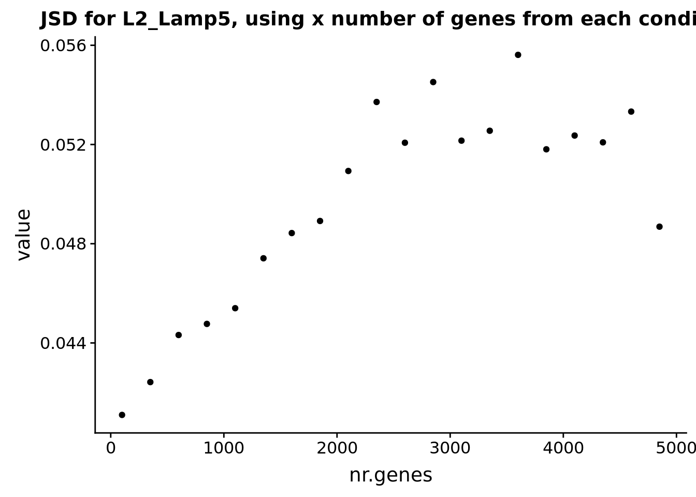
| Version | Author | Date |
|---|---|---|
| 8b7729d | githubz0r | 2019-04-15 |
load my de genes & get some DE genes, equal numbers for each subtype
de_genez <- readRDS(file.path('/home/larsc/data/eps_10x_de_celltype.rds'))
GetTopGenes <- function(de.result, nr, value='gene.names', filter.mito=TRUE){
res.df <- de.result$res
res.df <- res.df %>% dplyr::mutate(gene.names = rownames(res.df))
if (filter.mito){
res.df <- dplyr::filter(res.df, !stringr::str_detect(gene.names, "^MT-"))
}
res.sorted <- res.df %>% arrange(padj)
return(res.sorted[[value]][1:nr])
}
top_genez <- de_genez %>% lapply(GetTopGenes, 100, filter.mito=FALSE)
# check how many DE genes for each
countPadjes <- function(de.result,threshold=0.1){
padjes <- de.result$res$padj
sum(na.omit(padjes<threshold))
}
padjes_count <- de_genez %>% lapply(countPadjes,threshold=0.3) %>% as.data.frame %>% gather(key=subtype, value=count)
padjes_count %>% ggplot(aes(x=subtype, y=count))+geom_bar(stat='identity')+theme(axis.text.x = element_text(angle = -90, hjust = 1))
| Version | Author | Date |
|---|---|---|
| 8b7729d | githubz0r | 2019-04-15 |
top_padjes <- de_genez %>% lapply(GetTopGenes, 1000, value='padj', filter.mito=FALSE)
top_avg <- top_padjes %>% lapply(mean) %>% as.data.frame %>% gather(key=subtype, value=val)
top_padjes %>% as_tibble %>% gather(key=subtype, value=val) %>% ggplot(aes(x=subtype, y=val))+geom_boxplot()+
theme(axis.text.x = element_text(angle = -90, hjust = 1))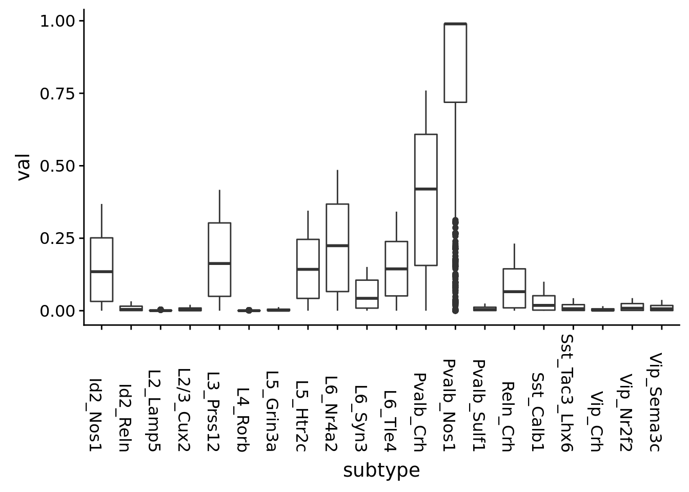
top_avg %>% as_tibble %>% gather(key=subtype, value=val) %>% mutate(log_val=log(val)) %>%
ggplot(aes(x=subtype, y=log_val))+#geom_bar(stat='identity')+
theme(axis.text.x = element_text(angle = -90, hjust = 1))+ geom_point()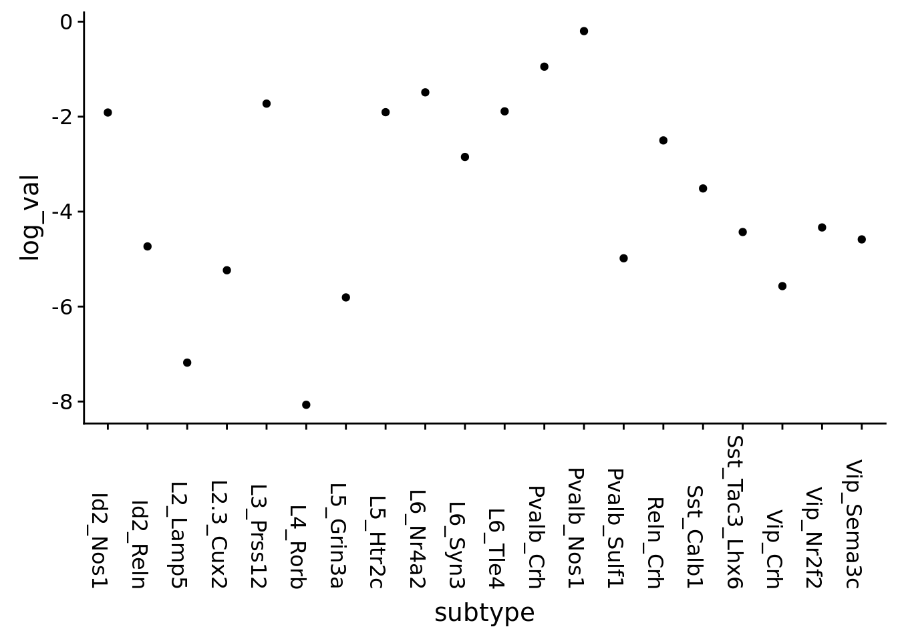
Just curious what the distributions of padjes looks like
de_genes_df <- de_genez %>% lapply(GetTopGenes, 100, value='padj', filter.mito=FALSE) %>% as_tibble
de_genes_gather <- gather(de_genes_df, key=subtype, value=padj)
ggplot(de_genes_gather, aes(y=padj, x=subtype)) + geom_violin(aes(col=subtype))+
theme(axis.text.x = element_text(angle = -90, hjust = 1))#+geom_jitter(aes(col=subtype), alpha = 0.3, size=0.5)
| Version | Author | Date |
|---|---|---|
| 8b7729d | githubz0r | 2019-04-15 |
top 100 de genes for each subtype individually
ObtainDistributions <- function(sub.annot, some.genes, rbound.panel, cellid.col, nr.cell, pseudo.count){
return(SelectCellProbs(sub.annot, rbound.panel, cellid.col, nr.cell, some.genes, pseudo.count))
} # just to rearrange the inputs for mapply
IndividualCellProbsList <- function(annotation, rbound.panel, cellid.col, sub.col, nr.cell, genes.list, pseudo.count=0){
sub.split <- split(annotation, annotation[, sub.col], drop=T)
cell.distributions <- mapply(ObtainDistributions, sub.split, genes.list, MoreArgs=list(rbound.panel, cellid.col, nr.cell, pseudo.count), SIMPLIFY=F)
return(cell.distributions)
}
ProbsToJSD <- function(state.split, rbound.panel, cellid.col, sub.col, nr.cell, genes.list, pseudo.count){
list.of.lists <- state.split %>% lapply(IndividualCellProbsList, rbound.panel, cellid.col, sub.col,
nr.cell, genes.list, pseudo.count)
all.sc.dists.de <- Map(CalculateAllJSD, list.of.lists$healthy, list.of.lists$epilepsy)
return(all.sc.dists.de %>% as_tibble)
} # specific for this data but saves some lines
### some sanity checking, do not mind it
#test_splits <- state_split %>% lapply(function(x){split(x, x[,2], drop=T)})
#min_cells_eps <- test_splits$epilepsy %>% lapply(function(x){dim(x)[1]}) %>% unlist %>% min
#min_cells_healthy <- test_splits$healthy %>% lapply(function(x){dim(x)[1]}) %>% unlist %>% min
#test_nos1_probs<-test_splits$epilepsy$Id2_Nos1 %>% SelectCellProbs(rbound_panel, 4, 101, top_genez$Id2_Nos1, 10^(-8))
#test_cell <- names(test_nos1_probs)[1]
#test_mat <- rbound_panel[test_cell, top_genez$Id2_Nos1]
#test_dist <- test_mat/sum(test_mat)
#test_dist <- test_dist +10^(-8)
#test_dist <- test_dist/sum(test_dist)
#all.equal(test_dist, test_nos1_probs[[1]]) # tru
### end sanity check
# equal numbers
all_sc_dists_de <- ProbsToJSD(state_split, rbound_panel, 4, 2, 100, top_genez, 10^(-8))
all_scd_de_gathered <- gather(all_sc_dists_de, key=subtype, value=JSD)
ggplot(all_scd_de_gathered, aes(y=JSD, x=subtype)) + geom_violin(aes(col=subtype))+
theme(axis.text.x = element_text(angle = -90, hjust = 1))#+geom_jitter(aes(col=subtype), alpha = 0.05, size=0.5)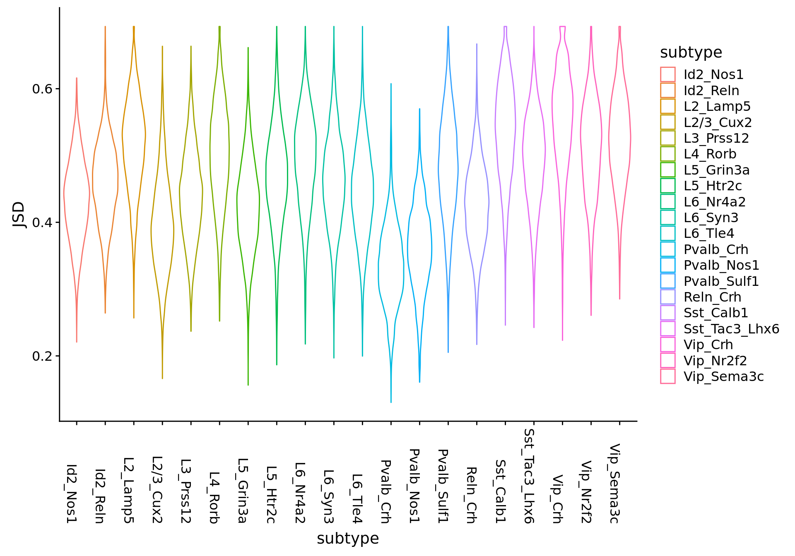
| Version | Author | Date |
|---|---|---|
| 8b7729d | githubz0r | 2019-04-15 |
Sam’s genes, not equal number of genes
de_genes <- readRDS("/d0-mendel/home/demharters/R/projects/UPF9_14_17_19_22_23_24_32_33/de_multilevel_genes.rds")
sam_de_count <- de_genes %>% lapply(length) %>% as.data.frame
#names(de_genez)==names(de_genes) # just checking
CheckOverlap <- function(x,y){ # is it completely off or wut
y=y[1:100]
return(sum(x %in% y)/100)
}
check_overlap <- Map(CheckOverlap, top_genez, de_genes) # low for pvalb nos since it only has 16
all_sc_dists_de_sam <- ProbsToJSD(state_split, rbound_panel, 4, 2, 100, de_genes, 10^(-8))
all_scd_de_gathered_sam <- gather(all_sc_dists_de_sam, key=subtype, value=JSD)
ggplot(all_scd_de_gathered_sam, aes(y=JSD, x=subtype)) + geom_violin(aes(col=subtype))+
theme(axis.text.x = element_text(angle = -90, hjust = 1))#+geom_jitter(aes(col=subtype), alpha = 0.05, size=0.5)
| Version | Author | Date |
|---|---|---|
| 8b7729d | githubz0r | 2019-04-15 |
Constant number of OD genes, constant number of cells.
od_genes = conos:::getOdGenesUniformly(con_object$samples, 1000)
healthcellprobs <- IndividualCellProbs(state_split$healthy, rbound_panel, 4, 2, 100, od_genes, 10^(-8))
epscellprobs <- IndividualCellProbs(state_split$epilepsy, rbound_panel, 4, 2, 100, od_genes, 10^(-8))
all_singlecell_dists <- Map(CalculateAllJSD, healthcellprobs, epscellprobs)
all_sc_dists <- all_singlecell_dists %>% as_tibble
all_scd_gathered <- gather(all_sc_dists, key=subtype, value=jsd)
ggplot(all_scd_gathered, aes(y=jsd, x=subtype)) + geom_violin(aes(col=subtype))+
theme(axis.text.x = element_text(angle = -90, hjust = 1)) #+geom_jitter(aes(col=subtype), alpha = 0.05, size=0.5)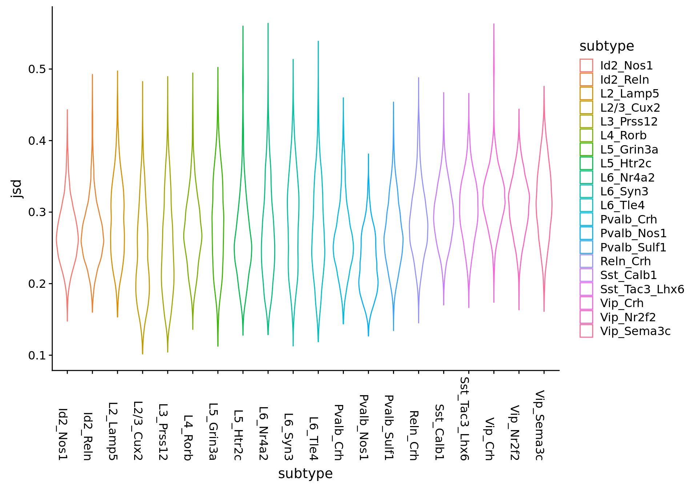 WHat if we use cor instead?
Correlation (overall)
od_genes = conos:::getOdGenesUniformly(con_object$samples, 5000)
top_genez <- de_genez %>% lapply(GetTopGenes, 5000, filter.mito=FALSE)
state_split <- split(annot, annot$condition, drop=TRUE)
subtype_split <- state_split %>% lapply(function(x){split(x, x$subtype, drop=TRUE)})
healthy_avg <- subtype_split$healthy %>% GetSubMatrices(rbound_panel, od_genes, cellid.col = 4) %>% lapply(GetColMeans)
epilepsy_avg <- subtype_split$epilepsy %>% GetSubMatrices(rbound_panel, od_genes, cellid.col = 4) %>% lapply(GetColMeans)
#healthy_avg <- subtype_split$healthy %>% GetSubMatsList(rbound_panel, top_genez, cellid.col = 4) %>% lapply(GetColMeans)
#epilepsy_avg <- subtype_split$epilepsy %>% GetSubMatsList(rbound_panel, top_genez, cellid.col = 4) %>% lapply(GetColMeans)
all_dists <- Map(cor, healthy_avg, epilepsy_avg) %>% as_tibble
all_dists_gathered <- gather(all_dists, key=subtype, value=correlation)
ggplot(all_dists_gathered, aes(y=correlation, x=subtype)) +geom_bar(stat='identity', col='hotpink') +
theme(axis.text.x = element_text(angle = -90, hjust = 1))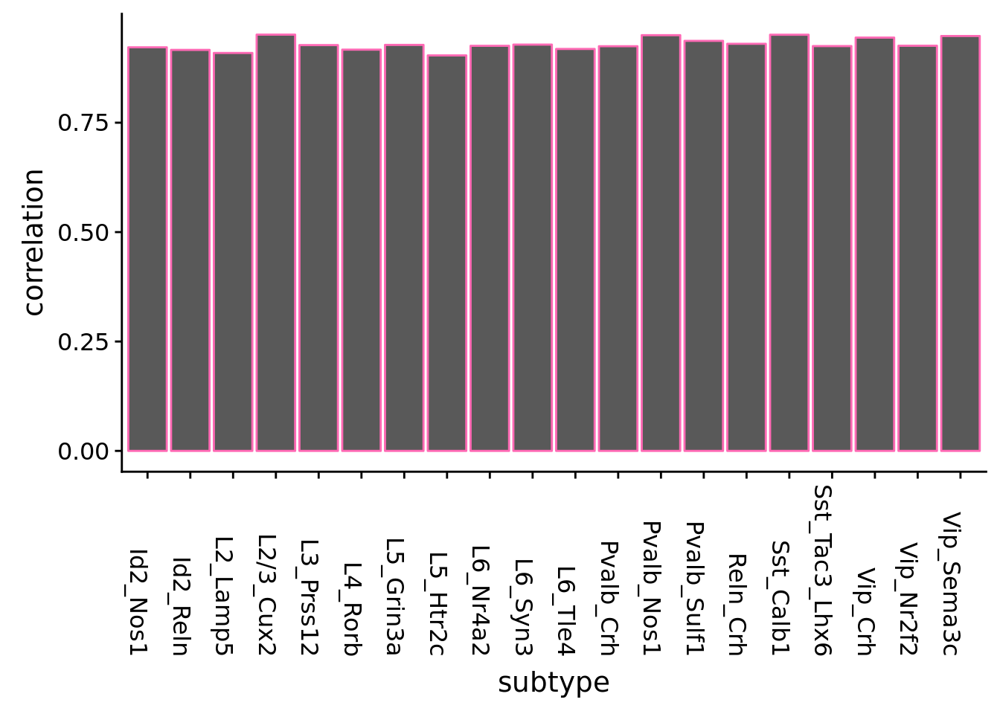
| Version | Author | Date |
|---|---|---|
| 8b7729d | githubz0r | 2019-04-15 |
ggplot(all_dists_gathered, aes(y=correlation, x=subtype)) +geom_point() +
theme(axis.text.x = element_text(angle = -90, hjust = 1))+ylim(0.75,1)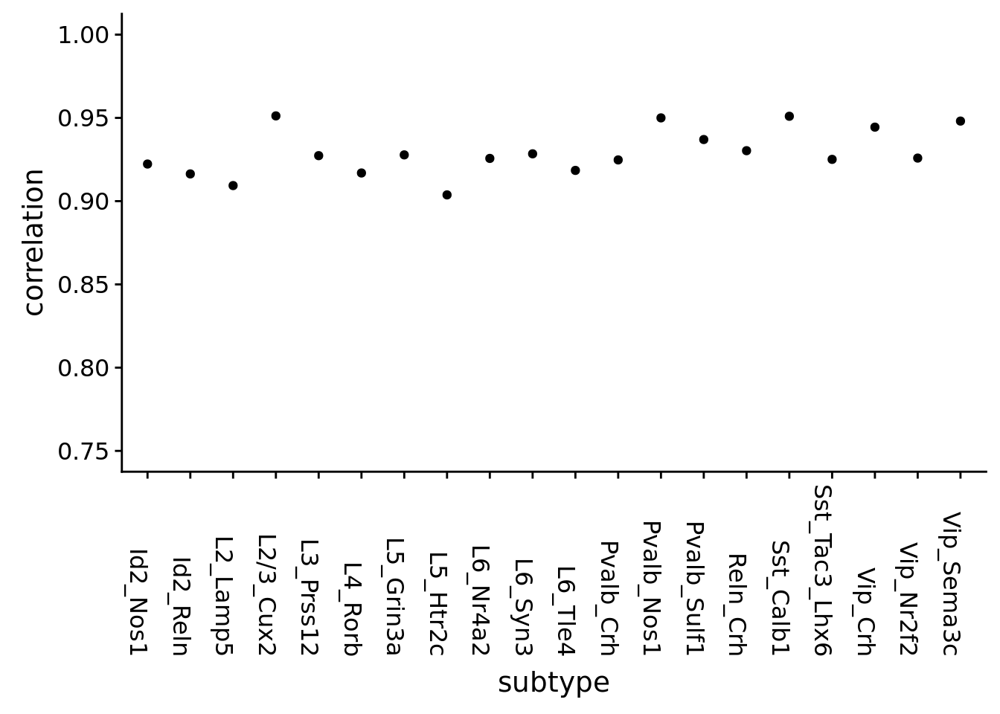
pairwise correlation
od_genes = conos:::getOdGenesUniformly(con_object$samples, 2000)
healthcellvecs <- IndividualCellProbs(state_split$healthy, rbound_panel, 4, 2, 100, od_genes, vec=T)
epscellvecs <- IndividualCellProbs(state_split$epilepsy, rbound_panel, 4, 2, 100, od_genes, vec=T)
all_singlecell_dists <- Map(CalculateAllCor, healthcellvecs, epscellvecs)
all_sc_dists <- all_singlecell_dists %>% as_tibble
all_scd_gathered <- gather(all_sc_dists, key=subtype, value=correlation)
ggplot(all_scd_gathered, aes(y=correlation, x=subtype)) + geom_boxplot()+
theme(axis.text.x = element_text(angle = -90, hjust = 1))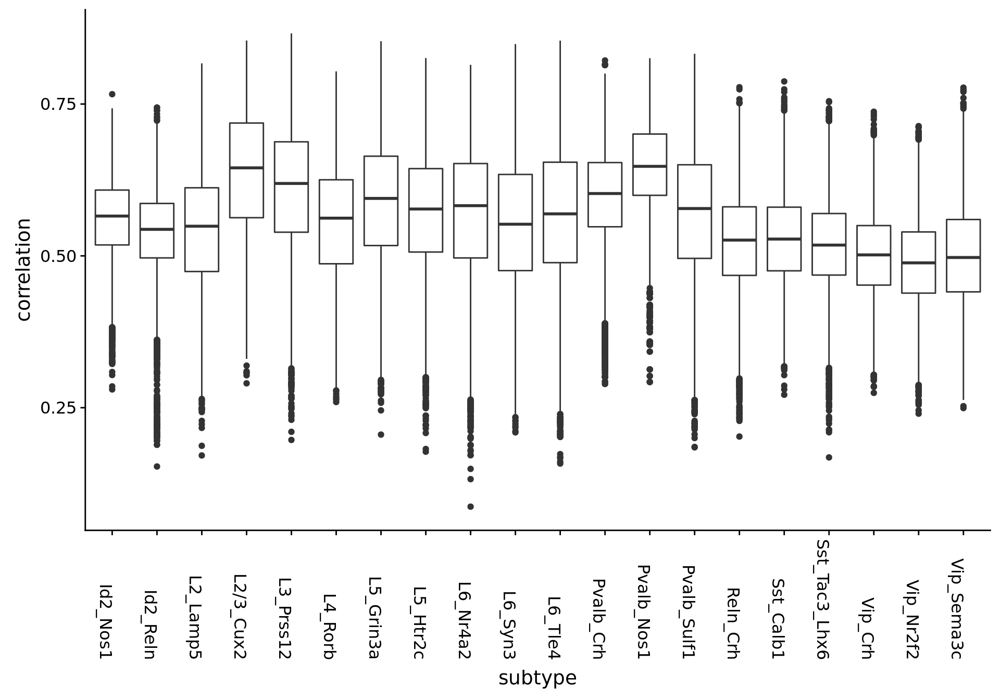
Constant number of OD genes, constant number of cells, normalize variance.
od_genes = conos:::getOdGenesUniformly(con_object$samples, 100)
healthcellprobs <- IndividualCellProbs(state_split$healthy, rbound_panel, 4, 2, 100, od_genes, 10^(-8), norm.var=T)
epscellprobs <- IndividualCellProbs(state_split$epilepsy, rbound_panel, 4, 2, 100, od_genes, 10^(-8), norm.var=T)
all_singlecell_dists <- Map(CalculateAllJSD, healthcellprobs, epscellprobs)
all_sc_dists <- all_singlecell_dists %>% as_tibble
all_scd_gathered <- gather(all_sc_dists, key=subtype, value=jsd)
ggplot(all_scd_gathered, aes(y=jsd, x=subtype)) + geom_violin(aes(col=subtype))+
theme(axis.text.x = element_text(angle = -90, hjust = 1)) #+geom_jitter(aes(col=subtype), alpha = 0.05, size=0.5)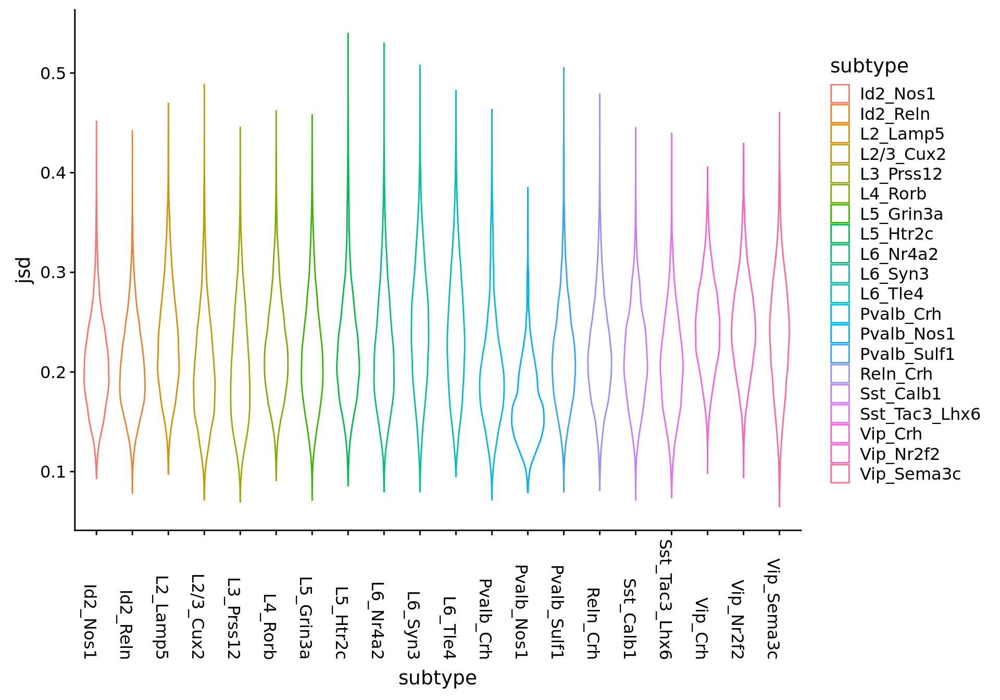
Instead of OD genes, union of most DE genes
top_genes_union <- top_genez %>% unlist %>% unique
healthcellprobs <- IndividualCellProbs(state_split$healthy, rbound_panel, 4, 2, 100, top_genes_union, 10^(-8))
epscellprobs <- IndividualCellProbs(state_split$epilepsy, rbound_panel, 4, 2, 100, top_genes_union, 10^(-8))
all_singlecell_dists <- Map(CalculateAllJSD, healthcellprobs, epscellprobs)
all_sc_dists <- all_singlecell_dists %>% as_tibble
all_scd_gathered <- gather(all_sc_dists, key=subtype, value=jsd)
ggplot(all_scd_gathered, aes(y=jsd, x=subtype)) + geom_violin(aes(col=subtype))+
theme(axis.text.x = element_text(angle = -90, hjust = 1))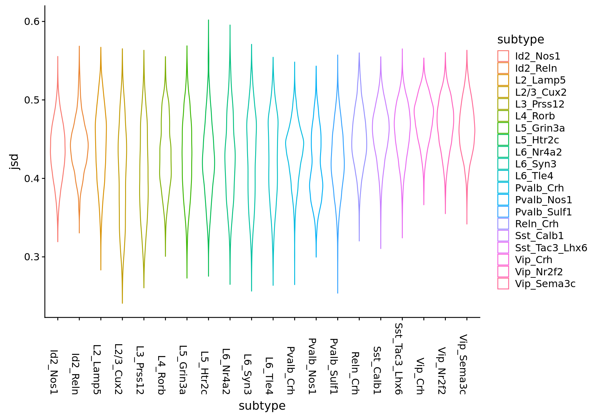
Now Aggregation of cells, same number of cells, 2000 od genes
od_genes = conos:::getOdGenesUniformly(con_object$samples, 2000)
od_genes_list <- rep(list(od_genes), 20)
IndividualCellProbsAgg <- function(annotation, rbound.panel, cellid.col, sub.col, nr.cell, genes.list, pseudo.count=0){
sub.split <- split(annotation, annotation[, sub.col], drop=T)
cell.distributions <- mapply(SelectCellProbsAggregated, sub.split, genes.list, MoreArgs=list(rbound.panel, cellid.col, nr.cell, pseudo.count), SIMPLIFY=F)
return(cell.distributions)
}
sub_probs_agg <- state_split %>% lapply(IndividualCellProbsAgg, rbound_panel, 4, 2, 200, od_genes_list, 10^(-8))
jsd_agg <- Map(JensenShannon, sub_probs_agg$healthy, sub_probs_agg$epilepsy) %>% as_tibble
jsd_agg_gathered <- gather(jsd_agg, key=subtype, value=js_distance_cell_agg)
ggplot(jsd_agg_gathered, aes(y=js_distance_cell_agg, x=subtype)) +geom_bar(stat='identity', col='hotpink') +
theme(axis.text.x = element_text(angle = -90, hjust = 1))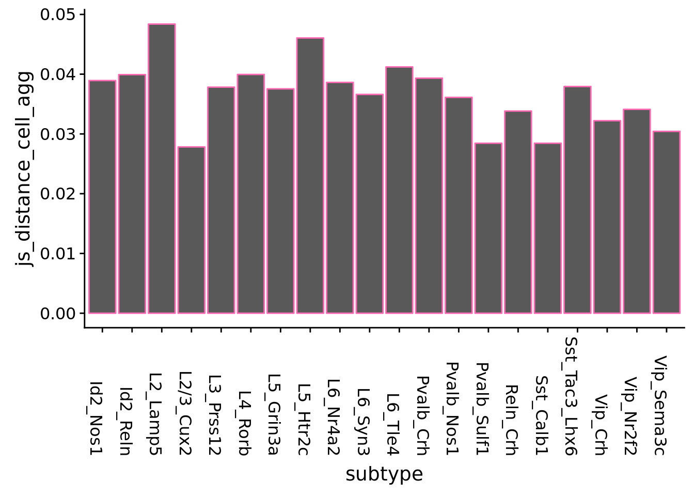
Sanity checking coz’ this weird (using previous iteration of prev.cell with top_genez instead of od genes)
# let's double check this bullshit (only meaningful if using 2224 cells so we sample all in eps lamp5)
#test_sub_split <- state_split %>% lapply(function(x){split(x, x[,2])})
#test_mat <- rbound_panel[test_sub_split$epilepsy$L2_Lamp5[,4],top_genez$L2_Lamp5]
#test_probs <- test_mat %>% GetColMeans
#test_probs <- test_probs/sum(test_probs)
#test_probs <- test_probs+1e-8 # feels better to add pseudo-prob than pseudo-variance-normalized-count
#test_probs <- test_probs/sum(test_probs)
#test_probs2 <- sub_probs_agg$epilepsy$L2_Lamp5
#all.equal(test_probs, test_probs2) # so the cells x genes matrix into prob dist is correct
# are cell names correct?
#test_cellnames <- IndividualCellProbsList(state_split$epilepsy, rbound_panel, 4, 2, 2224, top_genez, pseudo.count=1e-8)
#sum(test_cellnames$L2_Lamp5 %>% names %in% rownames(test_mat))==2224 # it's true, so function worksBhattacharyya
od_genes = conos:::getOdGenesUniformly(con_object$samples, 1000)
state_split <- split(annot, annot$condition, drop=TRUE)
subtype_split <- state_split %>% lapply(function(x){split(x, x$subtype, drop=TRUE)})
healthy_probs <- subtype_split$healthy %>% GetSampProbs(rbound_panel, od_genes, cellid.col = 4, pseudo.count=0)
epilepsy_probs <- subtype_split$epilepsy %>% GetSampProbs(rbound_panel, od_genes, cellid.col = 4, pseudo.count=0)
Bhattacharyya <- function(x,y){
-log(sum(sqrt(x*y)))
}
all_bhats <- Map(Bhattacharyya, healthy_probs, epilepsy_probs) %>% as_tibble
all_bhats <- gather(all_bhats, key=subtype, value=bhat_div)
ggplot(all_bhats, aes(y=bhat_div, x=subtype)) +geom_bar(stat='identity', col='hotpink') +
theme(axis.text.x = element_text(angle = -90, hjust = 1))
Cell by Cell Bhat, 100 each, 1000 od genes
od_genes = conos:::getOdGenesUniformly(con_object$samples, 1000)
healthcellprobs <- IndividualCellProbs(state_split$healthy, rbound_panel, 4, 2, 100, od_genes)
epscellprobs <- IndividualCellProbs(state_split$epilepsy, rbound_panel, 4, 2, 100, od_genes)
all_singlecell_dists <- Map(CalculateAllBhat, healthcellprobs, epscellprobs)
all_sc_dists <- all_singlecell_dists %>% as_tibble
all_scd_gathered <- gather(all_sc_dists, key=subtype, value=bhat)
ggplot(all_scd_gathered, aes(y=bhat, x=subtype)) + geom_violin(aes(col=subtype))+
theme(axis.text.x = element_text(angle = -90, hjust = 1)) #+geom_jitter(aes(col=subtype), alpha = 0.05, size=0.5)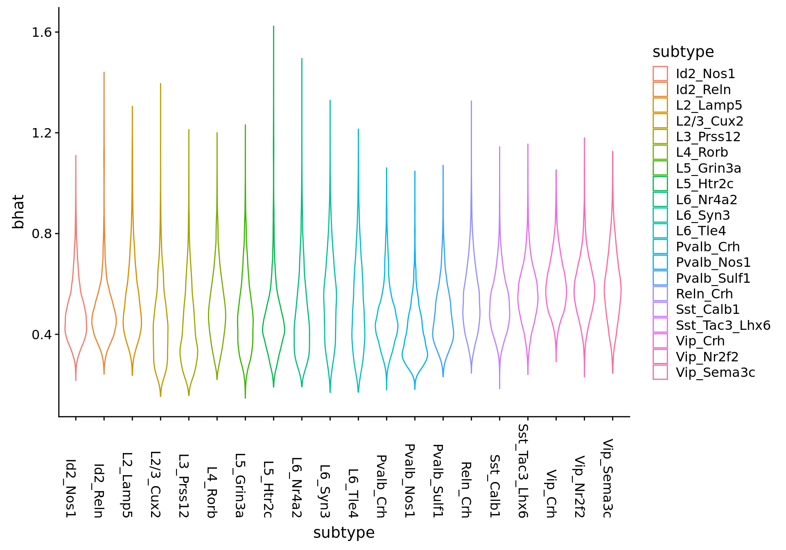
Individual subtype joint graph plot
plotOneSubtype <- function(con.object, annotation, subtype, font.size=2, alpha=0.3, size=0.4){
split.annot<-split(annotation, annotation$subtype)
sub.annot <- split.annot[[subtype]]
sub.annot <- sub.annot %>% mutate(sub.cond = paste(sub.annot$subtype, sub.annot$condition, sep='_'))
sub.groups <- setNames(sub.annot$sub.cond, sub.annot$cellids)
con.object$plotGraph(groups=sub.groups, font.size=font.size, alpha=alpha, size=size, mark.groups=T, plot.na=F)
}
#plotOneSubtype(con_object, annot, 'L2_Lamp5') # really should use repel, but I can't make it work
all_types <- annot$subtype %>% unique
all_types_plots <- all_types %>% lapply(function(x, con.obj, annotation){plotOneSubtype(con.obj, annotation, x)},
con_object, annot)Warning: Factor `Group` contains implicit NA, consider using
`forcats::fct_explicit_na`
Warning: Factor `Group` contains implicit NA, consider using
`forcats::fct_explicit_na`
Warning: Factor `Group` contains implicit NA, consider using
`forcats::fct_explicit_na`
Warning: Factor `Group` contains implicit NA, consider using
`forcats::fct_explicit_na`
Warning: Factor `Group` contains implicit NA, consider using
`forcats::fct_explicit_na`
Warning: Factor `Group` contains implicit NA, consider using
`forcats::fct_explicit_na`
Warning: Factor `Group` contains implicit NA, consider using
`forcats::fct_explicit_na`
Warning: Factor `Group` contains implicit NA, consider using
`forcats::fct_explicit_na`
Warning: Factor `Group` contains implicit NA, consider using
`forcats::fct_explicit_na`
Warning: Factor `Group` contains implicit NA, consider using
`forcats::fct_explicit_na`
Warning: Factor `Group` contains implicit NA, consider using
`forcats::fct_explicit_na`
Warning: Factor `Group` contains implicit NA, consider using
`forcats::fct_explicit_na`
Warning: Factor `Group` contains implicit NA, consider using
`forcats::fct_explicit_na`
Warning: Factor `Group` contains implicit NA, consider using
`forcats::fct_explicit_na`
Warning: Factor `Group` contains implicit NA, consider using
`forcats::fct_explicit_na`
Warning: Factor `Group` contains implicit NA, consider using
`forcats::fct_explicit_na`
Warning: Factor `Group` contains implicit NA, consider using
`forcats::fct_explicit_na`
Warning: Factor `Group` contains implicit NA, consider using
`forcats::fct_explicit_na`
Warning: Factor `Group` contains implicit NA, consider using
`forcats::fct_explicit_na`
Warning: Factor `Group` contains implicit NA, consider using
`forcats::fct_explicit_na`plot_grid(plotlist=all_types_plots, nrow=4)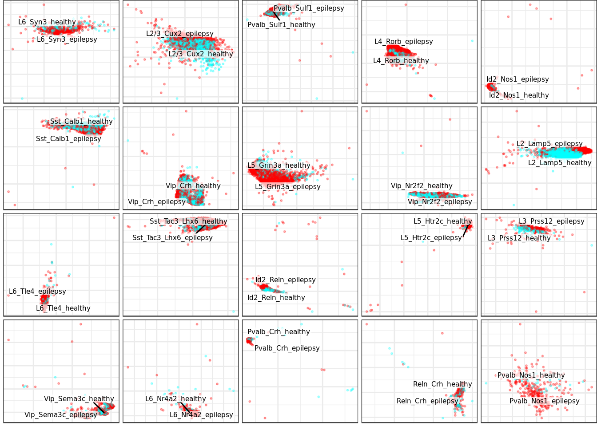
plotOneSubtype(con_object, annot, 'L4_Rorb', font.size=2, alpha=0.5, size=1.5)Warning: Factor `Group` contains implicit NA, consider using
`forcats::fct_explicit_na`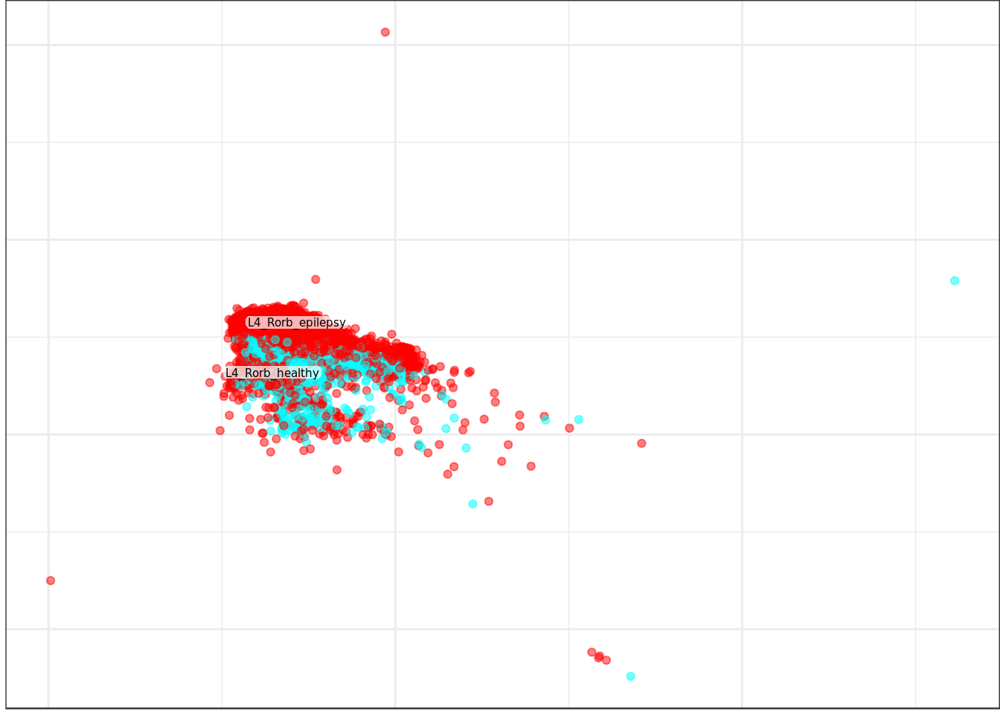
(annot$subtype=='Pvalb_Nos1' & annot$condition=='epilepsy') %>% sum[1] 312(annot$subtype=='Pvalb_Nos1' & annot$condition=='healthy') %>% sum[1] 31# actually let me just count all of them
subtype_cond_table <- paste(annot$condition, annot$subtype) %>% table
# maybe should try enforcing equal numbers of cellsSamples
plotOneSubtypeSamples <- function(con.object, annotation, subtype, font.size=2, alpha=0.3, size=0.4, show.legend=F){
split.annot<-split(annotation, annotation$subtype)
sub.annot <- split.annot[[subtype]]
sub.annot <- sub.annot %>% mutate(sub.cond = paste(sub.annot$subtype, sub.annot$sample, sep='_'))
sub.groups <- setNames(sub.annot$sub.cond, sub.annot$cellids)
con.object$plotGraph(groups=sub.groups, font.size=font.size, alpha=alpha, size=size, mark.groups=T, plot.na=F, show.legend=show.legend)
}
plotOneSubtypeSamples(con_object, annot, 'L2_Lamp5', font.size=c(2,4), show.legend=T)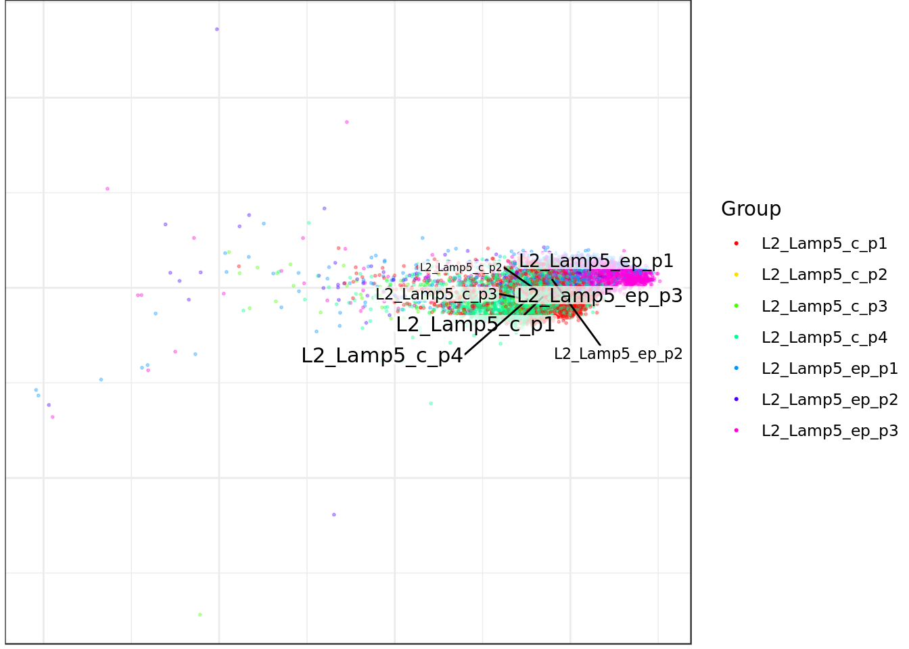
all_types_plots_samples <- all_types %>% lapply(function(x, con.obj, annotation){
plotOneSubtypeSamples(con.obj, font.size=1.5, annotation, x)
}, con_object, annot)
plot_grid(plotlist=all_types_plots_samples, nrow=4)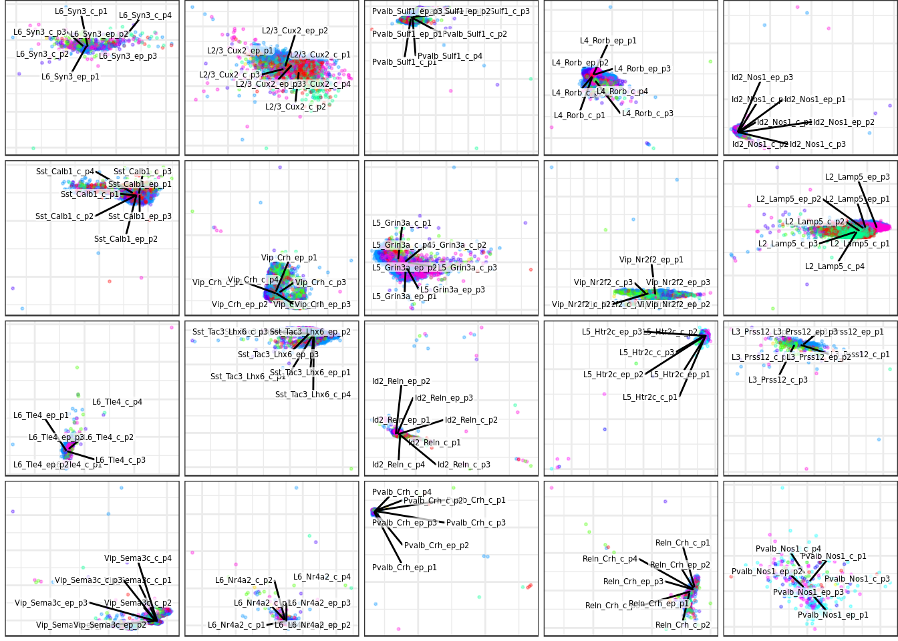
sessionInfo()R version 3.5.3 (2019-03-11)
Platform: x86_64-pc-linux-gnu (64-bit)
Running under: Ubuntu 18.04.2 LTS
Matrix products: default
BLAS: /usr/lib/x86_64-linux-gnu/atlas/libblas.so.3.10.3
LAPACK: /usr/lib/x86_64-linux-gnu/atlas/liblapack.so.3.10.3
locale:
[1] LC_CTYPE=en_US.UTF-8 LC_NUMERIC=C
[3] LC_TIME=en_US.UTF-8 LC_COLLATE=en_US.UTF-8
[5] LC_MONETARY=en_US.UTF-8 LC_MESSAGES=en_US.UTF-8
[7] LC_PAPER=en_US.UTF-8 LC_NAME=C
[9] LC_ADDRESS=C LC_TELEPHONE=C
[11] LC_MEASUREMENT=en_US.UTF-8 LC_IDENTIFICATION=C
attached base packages:
[1] stats graphics grDevices utils datasets methods base
other attached packages:
[1] cowplot_0.9.4 ggplot2_3.1.1 tidyr_0.8.3 stringr_1.4.0
[5] dplyr_0.8.0.1 pagoda2_0.1.0 pheatmap_1.0.12 conos_1.0.0
[9] igraph_1.2.4 Matrix_1.2-17
loaded via a namespace (and not attached):
[1] viridis_0.5.1 viridisLite_0.3.0 shiny_1.3.1
[4] assertthat_0.2.1 triebeard_0.3.0 urltools_1.7.3
[7] stats4_3.5.3 ggrepel_0.8.0 yaml_2.2.0
[10] robustbase_0.93-4 pillar_1.3.1 backports_1.1.4
[13] lattice_0.20-38 glue_1.3.1 digest_0.6.18
[16] RColorBrewer_1.1-2 promises_1.0.1 colorspace_1.4-1
[19] htmltools_0.3.6 httpuv_1.5.1 plyr_1.8.4
[22] pkgconfig_2.0.2 purrr_0.3.2 xtable_1.8-4
[25] mvtnorm_1.0-10 scales_1.0.0 brew_1.0-6
[28] whisker_0.3-2 later_0.8.0 git2r_0.25.2
[31] tibble_2.1.1 withr_2.1.2 nnet_7.3-12
[34] lazyeval_0.2.2 magrittr_1.5 crayon_1.3.4
[37] mime_0.6 mclust_5.4.3 evaluate_0.13
[40] fs_1.2.7 MASS_7.3-51.3 class_7.3-15
[43] Rook_1.1-1 tools_3.5.3 trimcluster_0.1-2.1
[46] kernlab_0.9-27 munsell_0.5.0 cluster_2.0.8
[49] irlba_2.3.3 fpc_2.1-11.1 compiler_3.5.3
[52] rlang_0.3.4 grid_3.5.3 rjson_0.2.20
[55] labeling_0.3 base64enc_0.1-3 rmarkdown_1.12
[58] gtable_0.3.0 flexmix_2.3-15 R6_2.4.0
[61] gridExtra_2.3 knitr_1.22 prabclus_2.2-7
[64] workflowr_1.3.0 rprojroot_1.3-2 dendextend_1.10.0
[67] modeltools_0.2-22 stringi_1.4.3 parallel_3.5.3
[70] Rcpp_1.0.1 DEoptimR_1.0-8 tidyselect_0.2.5
[73] xfun_0.6 diptest_0.75-7